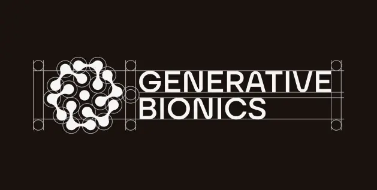
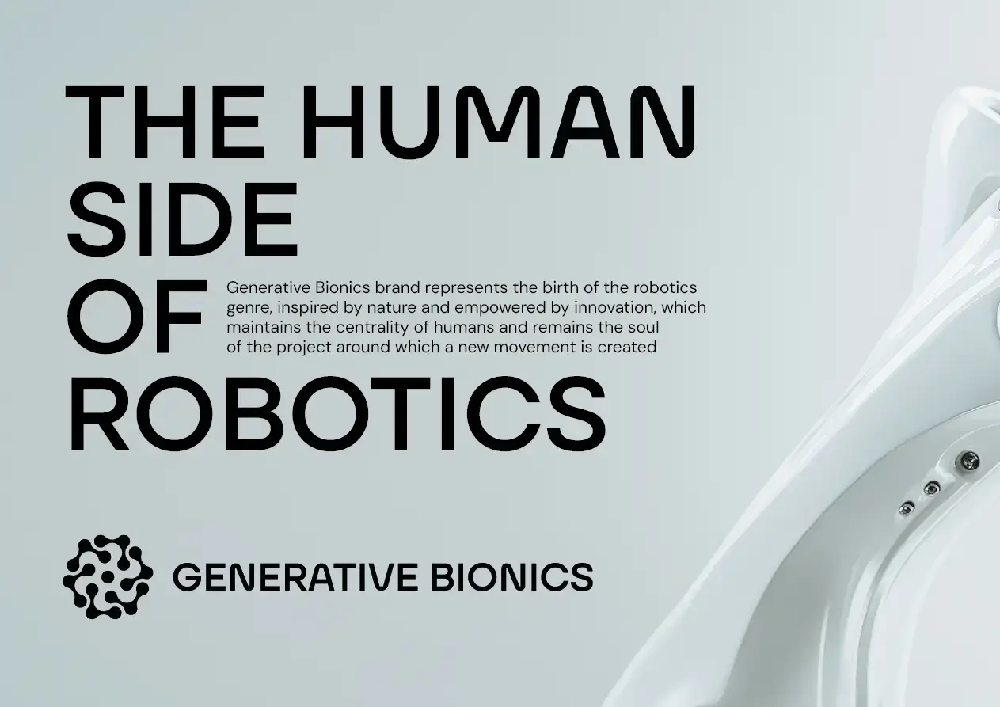

Generative Bionics
Logo design per la robotica del futuro. Oggi la robotica è alla ricerca di una propria identità: costruire un segno chiaro e riconoscibile diventa essenziale per raccontare innovazione, affidabilità e visione.


Un marchio che nasce dalla ricerca
Generative Bionics nasce dall’eccellenza scientifica dell’Italian Institute of Technology (IIT). È da questo contesto di ricerca avanzata che prende forma un’identità visiva capace di rendere accessibile la complessità tecnologica, trasformandola in un segno essenziale, chiaro e coerente, in cui precisione, modularità ed equilibrio formale guidano ogni scelta progettuale.
Il disegno del marchio segue una griglia rigorosa, che ne definisce proporzioni, pesi e relazioni geometriche. Ogni elemento è calibrato per comunicare solidità scientifica e coerenza visiva, senza rinunciare a una dimensione espressiva.
Un segno che si muove
Il logo si sviluppa a partire da una struttura circolare, ispirata alla logica distribuita della Physical AI, tecnologia alla base dei sistemi sviluppati dall’azienda. Una costellazione di punti e orbite interconnesse genera un segno dinamico e organico, che racconta un ecosistema in cui intelligenza artificiale, corpo meccanico e interazione umana convivono e si influenzano.
È un simbolo che parla di movimento, continuità e innovazione: valori centrali nell’identità di Generative Bionics.

Un’identità distintiva
In collaborazione con 6.14 abbiamo costruito un linguaggio visivo capace di unire rigore ingegneristico e sensibilità umana. Il logo diventa così il fulcro di un sistema flessibile, pensato per evolvere nel tempo insieme all’azienda e per rappresentare una nuova estetica della robotica Made in Italy.
Il marchio Generative Bionics è stato premiato ai Touchpoint Awards Identity 2026, categoria New Logo, per la capacità del progetto di tradurre la complessità della robotica in un segno chiaro, distintivo e contemporaneo.
Altri progetti
 Cultura robotica al Gazometro
Cultura robotica al GazometroVuoi diventare un nostro partner?
Contattaci